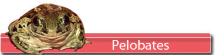
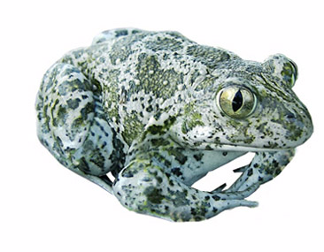

|
  |
||
 |
|
||
 L'angulaire de pièrre... Ce fossile appelé « angulaire » ou « pré-articulaire » est un des 2 principaux os de la mandibule chez les vertébrés primitifs. Chez les mammifères par exemple, cet os n'existe plus, ou tout au moins, plus sous cette forme. En effet, l'évolution a progressivement régressé cet os en faveur du dentaire. Le reliquat de l'angulaire a migré et s'est progressivement transformé en os de l'oreille. Déjà la forme torturée de l'angulaire des amphibiens annonce la complexité des os de l'oreille interne des mammifères. Chez les Amphibiens, on l'appelle plutôt maintenant "angulosplénial". Celui présenté ici est d'assez grosse taille et doit logiquement avoir appartenu à un anoure d'assez grande dimension (10 cm entre le bout du museau et l'extrémité du bassin.) Alors on pense tout de suite au monstrueux Latonia mais l'angulaire de Latonia est facile à caractériser et très différent de celui-ci. Cet os pourrait alors appartenir à un autre discoglosse. On soupçonne qu'au miocène, des discoglosses non Latonia devaient exister. Mais on n'a pas encore réussi à les caractériser. Cependant, un si grand discoglosse aurait déjà dû être identifié. L'autre alternative pour cet angulaire c'est le Pelobatidé. Des angulaires de Pelobates aussi grands que celui-ci ont déjà été trouvés. Si l'aspect général des angulaires de pélobates est respecté, cette pièce présente cependant des particularités qui ne permettent pas de poser une identification formelle. Une autre espèce plus petite?
Les ilions montrent en général des critères distinctifs suffisants pour permettre une détermination. Mais celui-ci est en mauvais état. Pourtant il y a 2 critères qui pourraient permettre une attribution à un petit pelobatidé : un embryon de petite crête dur le dessus du cylindre de l’os et aussi une dépression interne à la jonction entre la longueur de l’os et la partie actébulaire.
La grenouille de terre !...  Les Pélobates ressemblent à des grenouilles qui vivraient sur le sol. Mais ils constituent une famille différente. Leur morphologie s'est adaptée à la terre ferme avec des pattes plus aptes à la marche qu'au saut et des doigts non palmés. Ils ont une écologie proche de celle du crapaud.Ces animaux fouisseurs restent cachés dans des terriers le jour et sortent la nuit à la recherche d'insectes et autres petits invertébrés. Les pélobates sont plutôt des animaux de landes, milieux ouverts. Ils recherchent des sols meubles et les terrains basiques plutôt qu'acides. Ils vivent proches d'étendues d'eau douce nécessaires à leur reproduction. Les adultes subissent la prédation d'oiseaux de proie nocturnes, mais les têtards doivent plutôt échapper aux très nombreux prédateurs des mares. |
|||